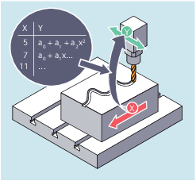

Curve tables can be used to program position and velocity relationships between two axes (leading and following axis). Curve tables are defined in the part program.
Curve tables replace mechanical cams. The curve table forms the basis for the axial master value coupling by creating the functional relationship between the leading and the following value: With appropriate programming, the control calculates a polynomial that corresponds to the cam from the relative positions of the leading and following axes.
See also:
Define curve tables (CTABDEF, CATBEND)
Check for presence of curve table (CTABEXISTS)
Delete curve tables (CTABDEL)
Locking curve tables to prevent deletion and overwriting (CTABLOCK, CTABUNLOCK)
Curve tables: Determine table properties (CTABID, CTABISLOCK, CTABMEMTYP, CTABPERIOD)
Read curve table values (CTABTSV, CTABTEV, CTABTSP, CTABTEP, CTABSSV, CTABSEV, CTAB, CTABINV, CTABTMIN, CTABTMAX)
Curve tables: Check use of resources (CTABNO, CTABNOMEM, CTABFNO, CTABSEGID, CTABSEG, CTABFSEG, CTABMSEG, CTABPOLID, CTABPOL, CTABFPOL, CTABMPOL)